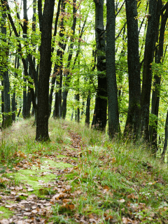
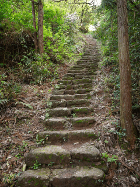

#2 – Your Path Your Journey
We are all on the same journey when it comes to healthy eating which is to achieve optimal health. The only difference is that we have, are, and will take different paths in getting there. I have thought about this for years, and I would like to take the time to share what’s in my heart. I have read emails, social status updates, comments, blogs, and more from a wide variety of people. Some of them have been a lifelong veteran of eating healthy, some are just beginning their journey and are confused on how to approach it all, some are sick, some are just intrigued, and some have been on a long path of healing and have achieved their health goals.
Promoting longevity, optimal health, and well-being can be easy if you have a good path laid out before you. The beauty of it all is that everyone can enter this path at any given point. You may be starting your adventure at the base of the path, or you may enter in from a different entry point. Regardless, we can all journey together on the path that promotes our individual health and reverses disease.
-
-
For some, eating healthy comes with grace and ease…
-
-
Sometimes you only see a little bit in front you, making it scary…
-

-
Some people struggle defining their path…
What does a Good Path look like?
Amie Sue, you mentioned above, “if you have a good path laid out before you.” What is a good path? What does it look like for me? How will I know that I am on the right path? I really can’t answer this for you, but I think we should all have a similar foundation filled with self-love, mindfulness, forgiveness, and compassion. You may already practice these things towards others, but do you practice them towards YOURSELF? (note to self)
Just as our DNA is unique to us, so will our paths. Some of us are just starting, and the path feels overwhelming. Along the way, we run into forks, hills, and puddles in the road which cause confusion and frustration. Often it flat out scares us enough to abandon the journey that we have begun. How many times have you found yourself sitting in the ditch next to the path you started, slumped over in exhaustion as you cradle your broken spirit and feeling as though you failed once again?
Let Mindfulness Help Guide You
As we try to tune into our health needs, we need to develop mindfulness. Mindfulness is the human ability to be fully present, aware of where we are and what we’re doing, and not be overly reactive or overwhelmed by what’s going on around us. Whenever you bring awareness to what you’re directly experiencing via your senses, or to your state of mind via your thoughts and emotions, you’re practicing mindfulness. As you walk the path, others may join in from a different point of entry (welcome them), some will step off (send good wishes their way), some will stumble (pick them up), some will doubt (lend a word of encouragement), some will skip with joy the whole way (rejoice with them). The main thing is not to become influenced by their journey, always remain true to your uniqueness.
-
-
Watch for others as they join you.
-

-
For some it can be an uphill battle, don’t give up!
-
-
Don’t let the “pebbles” in life distract you and trip you up.
Changing your diet and lifestyle can be difficult, especially if everyone is at a different level of enthusiasm. But that’s just it… we can’t allow others to direct our path and dictate what we eat. We must take our personal well-being into our own hands and be our own advocate. What works for you, may not work for your loved ones. Learning to listen and care for your own body is like tuning a piano.
Fine Tuning Along the Way
Piano tuning is the act of making small adjustments to the tensions of the strings of an acoustic piano to properly align the intervals between their tones so that the instrument is in tune. It is essential to tune ourselves in order to align our bodies so that they run in complete harmony. We must make daily tweaks and adjustments that support the way we are feeling (physically, mentally, and emotionally). This “tuning” happens through movement, the foods we eat, and mindfulness.
I am not saying that you have to do this alone or that structured diets are discouraged. They are vital for some people who are struggling with a disease. My overall message here is to be kind to yourself throughout your journey. Listen and learn from the voice within your body; it talks to you daily, are you listening? Let go of dietary labels; they block you from honing in on your intuitive abilities. Practice mindfulness and take note of where you are in your journey. Ask yourself, “Have I fallen off the path?” “Where is my focus?”
If you ever feel lost, find a quiet spot without distraction, close your eyes, take a few deep breaths, and do a body scan. You can do a body scan while seated or lying down (whichever is more relaxing), and gradually focus your attention on one body part at a time, noticing any physical sensations without judging or reacting to them. If this is too challenging for you, perhaps doing what I refer to as a “mind dump” is in order. Don’t think, just write. Dump all of your feelings on the page. You can always shred it after if you want. Focus on letting your fears, worries, and anger out of your heart.
-
-
Sometimes our minds get muddied with knowing what to eat…
-
-
Some people like everything to be perfectly planned out….
-
-
And sometimes we feel after a great amount of progress is made, we start going downhill once again…
As you look through the pictures here, which path resonates with you? Where do you feel you are at this exact moment? Regardless of what your path may look like, I am happy that you are here with us. When you surround yourself with a like-minded community, you find strength, encouragement, and support. Lean on others for guidance and give support to those who lean on you. blessings, amie sue
© AmieSue.com